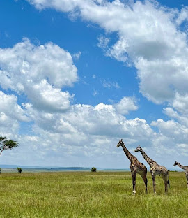
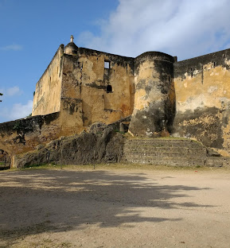
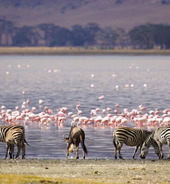

Maasai Mara

Explore and discover the great migrations of Maasai Mara
Learn MoreTembea-Kenya
Best Country to visit in Africa. Explore the beauty of Kenya with us and discover the best destinations, travel tips, and cultural experiences that this amazing country has to offer.

Explore and discover the great migrations of Maasai Mara
Learn More
The oldest city of Kenya
Learn More
The home of Flamingos
Learn MoreContact us at: elyasjimale221@gmail.com